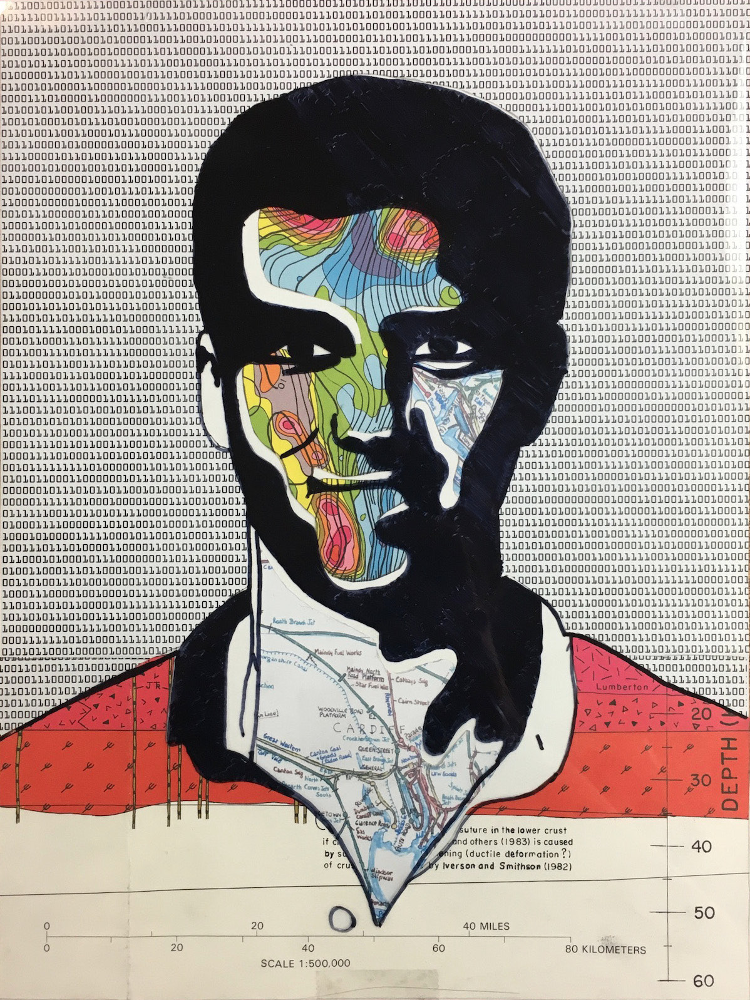

1. 2015 Robot Scoring Mechanism
2. 2016 Robot Belt Drive Train
3. Art and Design Pieces
1. 2015 Robot Scoring Mechanism - Sketch, CAD Animation, Final
Sketch

During the 2015 FRC season, we were challenged to build a robot that could deliver a stack of a recycling bin and as many totes as possible to a platform. I designed the main scoring mechanism of our robot to deliver a recycling bin and 4 totes. I CAD-ed, machined, and built a mechanism that both captured and lifted the bin and totes. First, I used a Lego mock up to explain the idea to my team. Then I drew sketches to lay out the components. I designed the mechanism to only require power to move it vertically, so it wouldn’t need any additional motors or servos to operate the capturing mechanism. The “claws” spun freely and were attached to a spring pulling the part down to a hard-stop at the bottom so the totes wouldn’t fall through. When the robot approached a tote, the mechanism would lower the stack it was previously carrying on top of the tote, catch the lip of the bottom tote, then lift the entire stack of totes, as shown in the later video.
CAD Animation (Video)
After making a mock-up and sketch, I used CAD to fully design my mechanism. I had to make changes from my initial sketch to satisfy our design requirements. To reduce the robot’s weight, I changed my design from using 4 support beams to only 2. I originally had 4 because I wanted to be cautious when carrying over 60 pounds of totes. In testing, I found that two support beams were sufficient. Because my teammate built the gearbox for the ball screw taller than we expected, I had to move the claws down relative to the ball nut so they still reached underneath a tote. We also tried different elastic materials to pull the claws down. I originally thought gravity would be enough, but we decided that adding a force would make picking up the totes easier and faster. We first tried surgical tubing but found it was too strong. I then settled on springs. This is an animation of the CAD assembly I made, showing the kinematics of the parts.
Practice Run (Video)
This video is a short clip of a practice run. The claws go down over the lip of the bin and totes. When the mechanism is raised, the claws are stopped from letting the recycling bin fall through. The robot then picks up more totes and delivers them to the scoring platform.
At Tournament (Image)

This image shows our robot at competition, scoring a stack of 4 totes and a recycling bin onto the white platform.
2. 2016 Belt Drive Train - CAD Rendering, Prototype and Assembled Product
CAD Rendering
In the 2016 FTC season, our robot had to drive up a slope and over small pipes laid across the slope. This is my CAD rendering using Autodesk Inventor of the drivetrain I designed for my team’s robot. We decided that a 1:1 ratio from the motor to the drive pulleys provided a good balance between speed and torque on our robot, which weighed almost 30 pounds. We used large drive pulleys so the robot could easily go from driving on the flat ground to begin climbing up the slope and then over the pipes. We also secured a bike tire to the outside of the belt for extra traction. I finished designing the layout in Autodesk Inventor using CAD parts of our purchased pieces that we downloaded from vendor sites.
In our tank drivetrain, a motor turns a sprocket on its drive shaft. Chains go around this sprocket to another one, turning them in sync. A second sprocket is attached to the drive pulley, which runs the belt around the drive train. We have a pair of driving motors for increased torque. We also run the front motor (depending on which way the robot is driving) at a slightly slower speed than the back motor, so the back pulley is always trying to stretch the bottom of the belt. Even with this slight adjustment, the belt still slipped on the pulleys while driving and especially while climbing up the slope. To solve this problem, I designed a tensioner mechanism that pushed a pulley against the top of the belt using a spring, ensuring constant pressure while driving so the belt never slipped on the large pulleys. We attached an encoder added to a small idler (not powered) pulley on the bottom that accurately measured our driving distances during the autonomous period.
3D Printed Prototype (Image)
To test the tensioner that I designed, I 3D-printed a prototype we could use until we machined it. This was the first time that I used our team’s 3D printer. I converted my CAD file to a file that could be printed. Because the printer uses molten plastic to form parts, I had to add removable supports inside the holes so they remained circular while printing. I printed the plastic at a high density so it wasn’t weak. I used the printed piece to confirm the hole spacing and that a pulley could fit inside and that the full piece fit in the drivetrain.
Being Assembled (Image)

This image shows the drivetrain mostly assembled, with my machined tensioner, before it was attached to the robot. We experimented with using different springs strengths until we found one that provided adequate force to prevent slipping. The tensioner worked by having the spring pull the component to the side. It pivoted around the bottom left hole in the picture, resulting in the pulley pushing against the belt. After our design was finalized, we sent it to a machinist so we could get a metal version made using a CNC. In this image, the belt isn’t taut because the spring had not yet been secured.
Driving (Video)
This clip shows the tensioner in use on the driving robot. We milled many open gaps in the side plates because we needed to reduce the weight of the robot. The robot could easily climb the mountain multiple times to score the blocks, and it remained a dominant force against other robots that tried to push it. This robot was the Los Angeles Region and West Super-region winner and at World Festival Championships placed 4th among over 128 robots.
In addition to FIRST Robotics, art and design are also my passions. Below are some of my favorite pieces from my Drawing and AP Studio Art classes that portray my diverse skills.
Piranha Plant from Super Mario Bros.
On the left is my hand-drawn charcoal illustration. I drew a shading of the Piranha plant from Super Mario Bros. as an exercise using only primitive solids (cubes, spheres, cylinders, cones, and pyramids). I used a theoretical light in the upper right corner to draw the shadows. This 19”x25” charcoal drawing took me about 8 hours to complete.
I wanted to challenge myself to learn a new 3D modeling program, so I decided to realistically model my charcoal drawing using Autodesk Maya. I also added lights in the same position that I imagined in my charcoal rendering. Including learning basics of Maya, the model took me about 6 hours to complete. I used the Pixar Renderman plug-in to render my Maya model. I compared the computer-rendered image on the right with my hand-rendered drawing on the left to verify that my shadows were accurate in my original charcoal drawing. I was happy to find they were close.
High Contrast Self Portrait

I hand made this self-portrait collage by drawing dark areas of a high-contrast image of myself on a 8.5”x11” sheet of clear Mylar. Underneath the Mylar, I placed precisely-cut shapes of topographical maps, railroad maps, and binary text to fill the white areas in my face, neck, shirt, and background.
Initial Animation (Video)
I also wanted to learn another 3D modeling and animation program, Cinema 4D. I learned the basics of this software to create a simple model and dynamic animation of my initials. I modeled a growing spline (curved line in 3D space) to appear as my initials (“CL”) from two planes. I used the shadow from two lights placed on opposing planes to show the two initials, the letter “C” is in the shadow from the green light and the letter “L” is in the blue light’s shadow.
Minion Perspective Drawing
I hand drew this three point perspective piece on a 18”x24” paper. I drew the rocket car and minion using colored pencils and the other shapes in perspective using drafting markers. I then added slight shadows using colored pencils. The multicolored hollow floating blocks are of equal height portrayed in 3-point perspective. I quartered the blue twisted rectangle by drawing orange borders as it twisted.
Blind Contour

In this blind contour, I covered the paper from my sight while drawing my friend’s face, using a single, continuous line. I went over the initial pencil contour with ink, and then I added a tessellation pattern I created in the hair and added dots in a hexagonal pattern to balance the drawing.
This Portfolio
I used Adobe InDesign to design and put this portfolio together. I then exported the page as an HTML file. I fixed some of the videos I embedded to display properly. I also edited the CSS style sheet to embed a font from TypeKit.